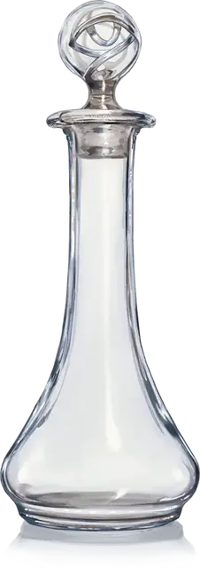

Зелье невидимости
Potion of Invisibility
Зелье, редкое

Рекомендованная стоимость 2000 ЗМ
Фиал с этим зельем выглядит пустым, но ощущается как содержащий жидкость. Когда вы выпиваете это зелье, вы получаете состояние Невидимый на 1 час. Этот эффект оканчивается преждевременно, если вы совершаете бросок атаки, наносите урон или сотворяете заклинание.